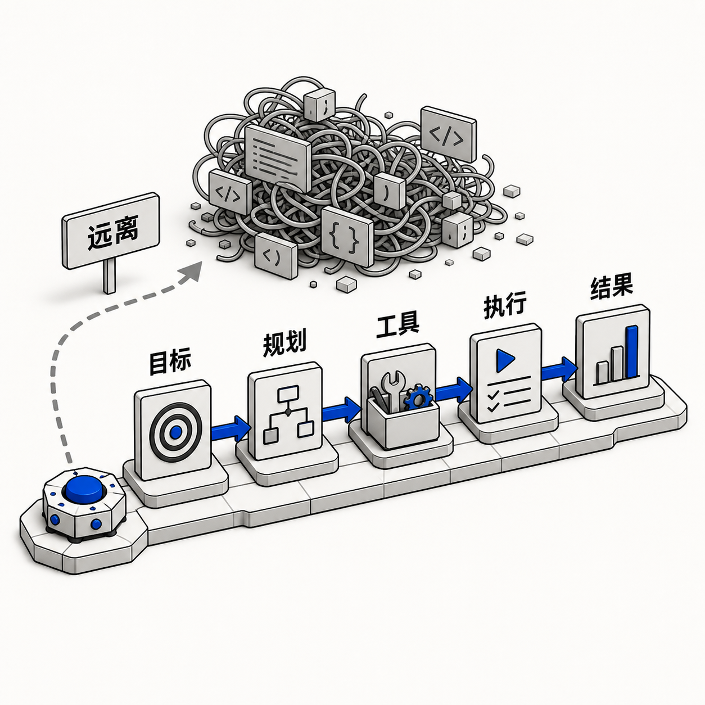

灵感库
每一条线索都有上下文。
图片和提示词不再散落在不同窗口。回来时，你仍然知道它从哪里开始，下一步可以往哪里走。

把参考图、文字、模型和 Skill 放到同一张可靠的桌上。收集，折叠，显形，然后继续。
Windows · macOS · 你的图片与提示词先留在你的电脑上

Musefold 把图片、提示词、参考图、模型连接、Skill 和生成历史放在一条可回看的路径里。好的方向不会因为一次关闭而消失，下一次可以从它继续。
从一张图、一段文字或一个还说不清的念头开始，先把它留下。
提示词、参考图和公开 Skill 保留在同一个上下文里，创作目标清楚可改。
切换模型，按一次生成，让一个方向先成为真正的图像。
保存版本、来源和参数，下一次创作从已有的好部分继续。
图片和提示词不再散落在不同窗口。回来时，你仍然知道它从哪里开始，下一步可以往哪里走。
“把一次生成留下的方法，变成下一次创作的起点。”
提示词、模型、参数、参考图、账号和结果，作为一个完整版本被保存。
生成不是终点。保留来源和历史，试错有迹可循，好的方向可以慢慢长大。
把它带回工作台这些作品来自 Musefold 的本地历史：一个念头先成为图像，再成为下一次创作可以继续的上下文。

你的图片、提示词、设计方案与历史，先留在你的电脑上。账号凭证由系统安全存储，模型连接和自动化开关由你决定。
本地数据
图片、提示词和历史在本机管理账号与 Provider
按你的使用方式切换模型服务可回看
每次生成都能继续编辑与复用公开 Skill 会先识别 Musefold Cloud MCP 或本地 Desktop MCP，再按实际工具目录调用生图、提示词库、官方视觉 Skill 与参考图。没有 MCP 时才回退到本机 CLI。
下载 Musefold，连接你自己的模型与账号。安装后，CLI 会自动寻找正在运行的桌面 App。